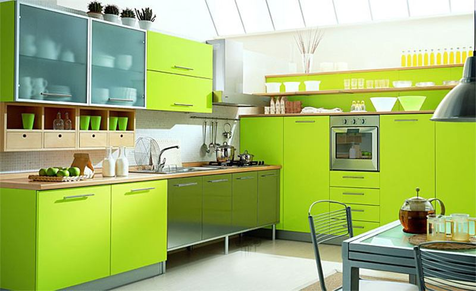

Применение ПВХ-пленки в изготовлении мебели
ПВХ-пленка представляет собой термопластичный полимер на базе винилхлорида. Широкое применение данный полимер получил в мебельной промышленности для покрытия выпуклых и ровных поверхностей, а также в качестве материала для декора поверхностей деталей мебели из древесно-стружечной плиты (ДСП) или древесноволокнистой плиты средней плотности (МДФ).
ПВХ пленки, благодаря огромному разнообразию цветов, текстур и тиснений, позволяют имитировать на поверхности облицовочного материала натуральное дерево, мрамор, камень и т. п., причем не только на вид, но и на ощупь. Это не только красиво, но и практично, долговечно и недорого.
ПВХ-пленка, применяемая в мебельном производстве, имеет определенные преимущественные характеристики:
- надежно предохраняет от повреждений химикатами и механических дефектов, предотвращает потерю оригинального цвета мебели и образование пятен;
- замедляет процесс старения изделия и его износоустойчивость;
- обеспечивает высокую сопротивляемость к атмосферному влиянию и скачкам температур;
- обладает защитными свойствами по отношению к солнечным лучам, защищая материал от выгорания;
- имеет высокопрочные свойства;
- за изделиями, покрытыми ПВХ-пленкой, легко ухаживать;
- обширный ассортимент цветов и вариантов декора.
Можно выделить несколько видов ПВХ-пленки:
- ПВХ-пленка для покрытия выпуклых поверхностей методом мембранно-вакуумного прессования (рельефные мебельные фасады, дверные массивы, а также различные виды декора мебели). Процесс покрытия изделия осуществляется на спецоборудовании — вакуумных прессах. При данной технологии используются более плотные ПВХ-пленки с толщиной слоя от 0,3 до 0,5 мм;
- ПВХ-пленка для ламинирования или каширования изделий не только из дерева, но и из пластика и металла. Для обработки деталей в данном случае применяются станки для облицовки изделий;
- ПВХ-пленка, используемая в технологическом процессе каширования отшлифованных прямых поверхностей;
- защитная ПВХ-пленка предотвращает истирание мебели, образование вмятин и царапин. Данный вид ПВХ-пленки увеличивает срок службы мебели и сохраняет ее привлекательность. Также с помощью защитной пленки можно реставрировать старую мебель.
Технологический процесс нанесения ПВХ-пленки для мембранно-вакуумного прессования на изделия из мебели
Для обработки деталей мебели из МДФ плёнкой применяются вакуумные или мембранные прессы.
Процесс нанесения ПВХ-пленки выглядит так:
- Заготовки изделий предварительно обрабатываются клеем. Для продолжения процесса клей должен подсохнуть, а затем на специализированных подкладках эти заготовки располагаются на столе. Сами заготовки обрабатываемых изделий должны быть равными по размеру обрезу плёнки, для того чтобы оптимизировать растяжение материала, а сама плёнка плотнее прилегала бы к заготовке. Чтобы по окончании процесса было удобно обрезать излишки пленки, между заготовками изделия оставляют небольшое расстояние.
- ПВХ-пленка крепится над столом специальной планкой, которая прижимает плёнку к заготовке.
- ПВХ-пленку необходимо нагреть до температуры, которую рекомендует производитель (145–160 °С).
- В результате прессования между плоскостью стола и растянутой над заготовками изделия плёнкой откачивается воздух. Через несколько минут ПВХ-пленка приклеена.
- После полного остывания пленки с заготовки по контуру срезаются ее излишки.
Все новости